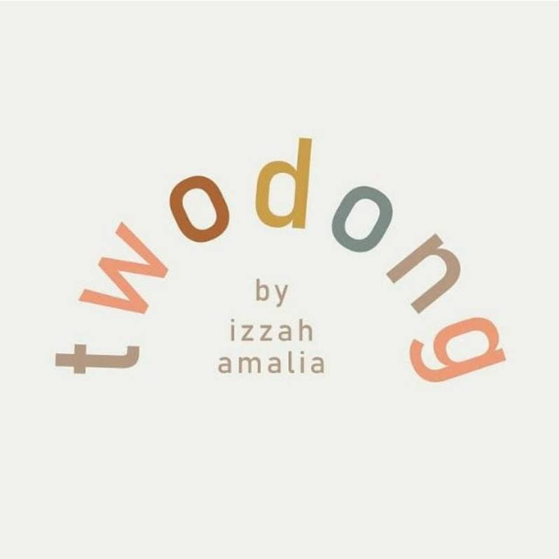
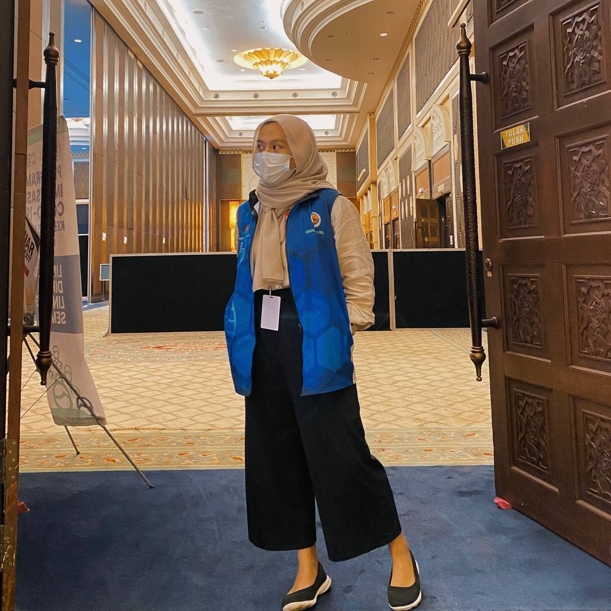
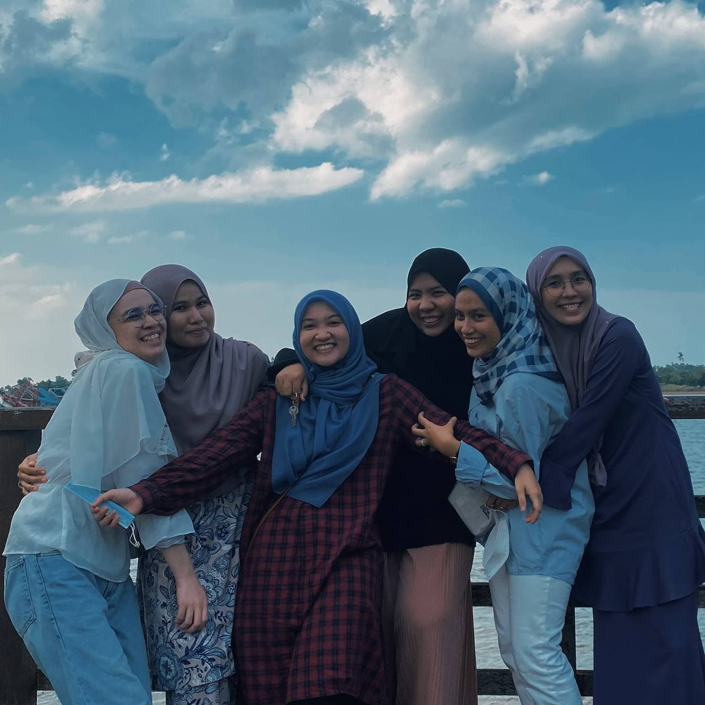

E X P E R I E N C E S
MY 2021 JOURNEY
Since it's a New Year, why not I share with you guys what I have been through in 2021.
Launch my own business
On 21 March 2021, my friend and I decide to start our own scarf business which is Twodong.my. Twodong.my is a rebranded business of my friend's old business. We sell a high quality cotton shawl. I gained a wonderful experience of running a business and also gained a knowledge.

Work at KFC
On 11 May 2021, Because I don’t have anything to do during the semester break, my friend and I decide to work at KFC as 'Contract Raya' for 10 days. It was my first job of my life. I was assigned to work in the kitchen division or we called it as 'backup' where we responsible in frying fries, making burger, cooking rice and many more. On my first day, I got culture shock for a while, because it is not an easy work and it is so so so tiring. My experience working at KFC was not so great. I only work there for 8 days only because I cant hold the environment. But at least, I learned something new there :)
 MyVac Volunteer!
On 29 August 2021, I become on of MyVac volunteer at Taman Tamadun Islam PPV. It was a highlight of the year! I had so much fun working and made some friends there. It was an unforgettable experience, I always dreamed of being a volunteer in order to help many people especially the elderly. MyVac has helped me achieve my dreams. I met a variety of people; races, religions and ages. When my working hours are over, I feel satisfied and very happy to be able to help and work for the country. This is an experience that I won't forget til my last breath.